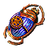
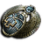

1 · Breach + mappe 8-mod mappe 152c a mappa
Compri una mappa T16.5 a 8 mod e ne escono venticinque. Le Breach non pagano in valuta: pagano in Hiveblood, che al Genesis Tree diventa basi fratturate da vendere.
Quando: subito — i cinque scarab sono già in stash, manca solo la mappa
Difficoltà
AltaT16.5 a 8 mod · 5 Breach aperte
Investimento
152c a mappa110c la mappa · 27c i cinque scarab · 14c l'astrolabio
Resa
3,8 div/mappadichiarata · non misurata su snapshot
Varianza
Altail 27% sta in 5 basi da craft
I due motori, e il bottino per terra non è nessuno dei due
| Motore | Da cosa nasce | Cosa produce |
|---|---|---|
| mappe che fanno mappe | i tre Cartography Scarab sulla 8-mod | ~500 T16 · 27 T16.5 · 30 Nightmare |
| Breach → Genesis Tree | 4-5 Unstable Breach → ~4.500 Hiveblood | basi fratturate da 1 a 12 divine |
| bottino per terra | densità | 22 div su 92 — il 24% |
Come si corre
- Si pulisce. I mostri arrivano addosso.
- Riempi la barra prima del timer: la Breach si stabilizza e paga.
- Boss di mappa: con
Thorough Exploratione <50 mostri rimasti prende i wisp. - Genesis Tree:
CTRL+LMBsui Wombgift.
Genesis Tree
🎮 Comprare le mappe
🎮 Regex per vendere — dalla più cara alla più economica
1 · Il jackpot — More Maps ≥ 150% · 330-394c · 41 caratteri
2 · Le T16.5 — col Delirium sembrano T16: separarle sempre · 95c · 31 caratteri
3 · More Maps ≥ 100% — tre cifre prima del
4 · Ha una ricompensa qualsiasi — ~55c · 20 caratteri
5 · Nightmare — 40c · 11 caratteri
"more maps: .1[5-9].%|more maps: .[2-9]..%""originator" "more maps: ....%"% · 95c · 18 caratteri
"more maps: ....%""more [scd]|more ma""nightmare"🔴 Quello che non si illumina con nessuna delle cinque vale 3,8c: è il mucchio da vendere in blocco.
Albero atlas
Map drop chance + Shaping Skies/Mountainstutto
🔴
Map Item Memory Influence ×2 le T16.5obbligatoriBreach Enemy at the Gateskeystone
Eater of Worlds altari blusì
Synthesised Stability stessa mappa in loopkeystone
Scarab — cinque slot
Il carico · 5 slot26,3 chaos
1×Cartography Scarab of CorruptionLe mappe trovate sono corrotte con 8 mod15,9c
2×Breach Scarab of Instability2 Unstable Breach in più ciascuno · max 24,0c
1×

Cartography Scarab of Escalation+10% mappe per ogni mod → +80% su una 8-mod1,3c1×

Delirium Scarab of DelusionsLe mappe trovate hanno layer di Delirium1,1cGrasping Astrolabe sull'atlante, non nel device · ~7 mappe102c
Il filtro decide il prezzo
MM ≥ 100% · pack ≥ 50% 262 offerte · quello che si compra110c
MM ≥ 100% · pack ≥ 40% 88772c
More Maps ≥ 70% 4.38530c
la query del video 186179c
il video a voce pack 50 · MM 110 · 34 offerte300c
Cosa esce — prezzi con Delirium
T16 senza riga
More il mucchio3,8cT16
More Maps ≥ 70%55cT16
More Maps ≥ 100%95cT16.5
More Maps ≥ 100% 27 pezzi a ciclo96cNightmare Map 30 pezzi40c
Synaptic Ring raccoglili tutti68c
Fugitive Ring15c
Cryonic Ring3,9c
Mappa
Jungle Valley densità 6 — la più alta fra le aperteL10 · D6
⚠️ boss non rushable, con fasi — e l'astrolabio lo rende obbligatoriolento


 Baran ↗
Baran ↗ Veritania ↗
Veritania ↗ Al-Hezmin ↗
Al-Hezmin ↗ Drox ↗
Drox ↗